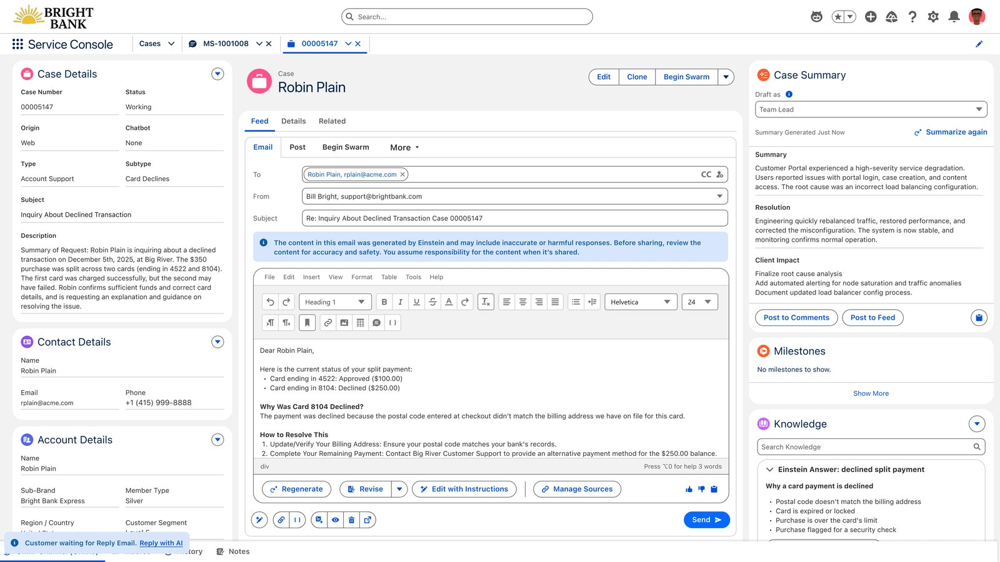
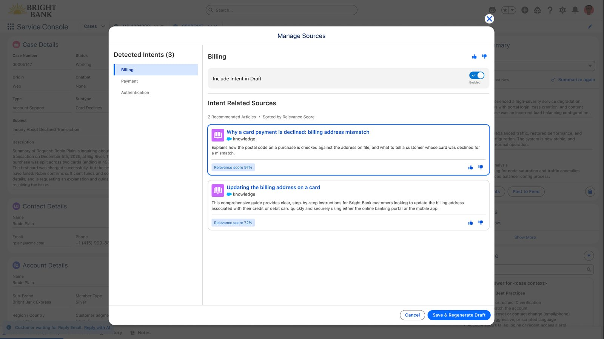

One click, and the reasoning underneath it
The fourth version of an email reply feature, and the one I designed.

Overview
A customer writes in with three questions. Over four versions, the feature that helps a support rep answer them went from a fixed prompt, to articles the rep had to find, to a single click. A colleague designed the first three while I was on maternity leave. I designed the fourth: one click finds every question in the email, matches each to a knowledge article and drafts the whole reply, and a second click shows the rep exactly what the system understood.
- Role
- Product designer for the fourth version. One-click drafting, managing intents and sources, admin setup.
- Company
- Salesforce, Service Cloud
- Users
- Support reps answering email, and the admins who turn it on
- Dates
- 2025–2026
Three versions before mine
Each version moved one more decision from the rep to the system. I came back from leave to the third.
1. A fixed prompt
The rep clicked, and the model drafted a reply from a standard prompt and the case details. Quick, with nothing to draw on beyond the case itself.
2. One article
The rep picked a knowledge article, and the draft drew on it as well as the case. Replies were now grounded in the company's own answers. Finding the right article became the rep's job.
3. Several articles
The rep could pick more than one article, which made room for emails that asked more than one thing. It also meant more searching, one article for every question.
By the third version the drafting was good and the work around it had grown. On an email with three questions, the rep read the thread, worked out what was being asked and searched for an article per question, all before the system wrote a word. If they missed a question, the draft missed it too, and nothing in it said so. Whether that got caught came down to how carefully the rep read, and in practice to how long they had been in the job.
Who was reading the draft
A support rep working several cases at once, measured on how quickly they close them and on whether the customer has to write back. Fluent in the console. Not someone who writes prompts, and not someone with time to.
The principle
Reps will not trust a draft they cannot check quickly.
One click to a draft
My version does the splitting for the rep, with no prompt to choose and no article to find. The system reads the email, finds up to three separate intents and scores its confidence in each. It searches the knowledge base once per intent, then writes a single reply that covers all of them. The rep sees the draft, and a count of the sources behind it.
We tried giving each intent its own draft button and dropped it. A rep answering a customer wants one reply to send. Three partial replies to stitch together is the old job with extra steps.
Nothing sends by itself. The rep always clicks to generate and always sends the reply themselves. Product held that line firmly, partly to keep model costs predictable, and it suited the design: the person who signs the email stays the person who decides to send it.
The reasoning, one click down
Most drafts do not need checking. Some do, and for those the rep needs to see what the system thought the customer was asking before putting their name on the answer.
A second click opens that view. Each detected intent sits on its own row with its confidence, a checkbox for whether it is in the draft, and the article it drew on. A rep can untick an intent the system got wrong, swap the article for a better one, or put everything back the way the system had it. The draft updates as they go.

Keeping this behind a click was deliberate. On the main surface a rep needs the draft and very little else, and every extra control there costs attention on every email that was already fine. The sources appear when the rep asks for them.
Showing which article belongs to which intent took a few rounds. Filter tiles looked like fixed categories, but the intents change with every email, and controls that look permanent over data that is different each time would have confused people. A row of toggle buttons had the same problem in less space. Where it landed is simpler: a short intent label beside each article title, which an admin can switch off.
When the model is wrong
Every recovery is a single step. A wrong intent gets unticked, and a weak source gets replaced from a search. If a rep has made things worse, they restore the default.
When the system finds no intent at all, it says so and the rep writes the reply themselves. Failures are split by cause, so a setup mistake, a permissions problem, a temporary outage and a response the model got wrong each look different to the rep. If the problem is configuration, the rep is told it is configuration. An empty reply with no explanation only teaches them that the feature is unreliable.
Setting it up
Admins switch it on for their org, and it starts off. They choose which email domains it is trusted to answer, and how many intents it may pull out of a single email: three by default, up to five.
What came next
The larger question was whether to keep extending a fixed pipeline that detects, searches and drafts, or to rebuild the whole thing as an agent that decides its own steps. We kept the pipeline for now, and I designed the agent-based version alongside it so that the move would not start from nothing.
What I would do differently
Get to one click sooner. Choosing articles by hand came first because it was quicker to build, and it lasted two versions. What reps needed all along was a draft the moment they clicked, with the sources there to change if they wanted to. I would argue for that as the starting point, even in a smaller first form.
What was never measured
We never tracked how often reps sent a draft unchanged, or how much they edited it first. The draft text is not stored, for privacy reasons, so there is nothing to compare the sent email against.
Teaching a case to fill itself in →